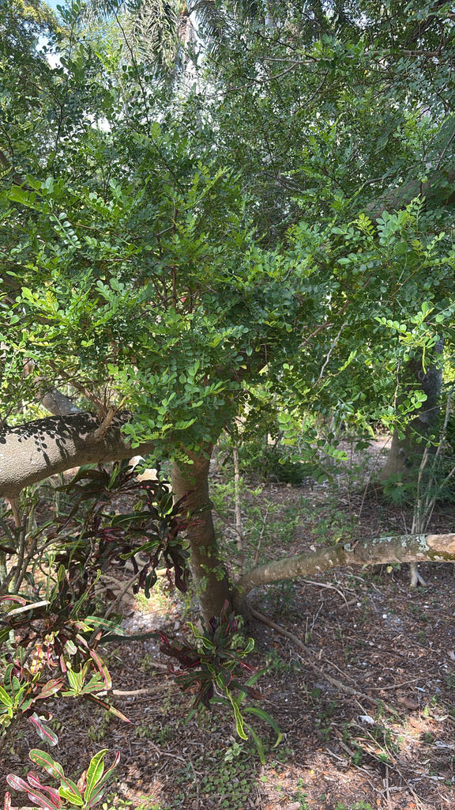

- The Wild Lime is the essential host plant for the Giant Swallowtail butterfly — Florida's largest butterfly, with a wingspan reaching six inches.
- Without plants like this one, those spectacular butterflies cannot complete their life cycle.
- The aromatic leaves smell like citrus when crushed, a clue to its membership in the rue family alongside oranges and lemons.
- Small and thorny enough to be overlooked, but ecologically critical to the butterfly community of the park.
Native to hammocks throughout Central and South Florida, as well as southern Texas, Mexico, the Caribbean, and South America. Member of the Rutaceae — the citrus family — making it a native Florida relative of oranges, lemons, and limes. The genus Zanthoxylum comes from the Greek xanthos meaning "yellow" and xylon meaning "wood."
- The Giant Swallowtail butterfly (*Papilio cresphontes*) — North America's largest butterfly, wingspan up to 6 inches — hosts on Wild Lime as one of its preferred native plants. The caterpillar is called the 'Orange Dog' by citrus growers because it feeds on citrus family plants and can defoliate a young tree.
- Its disguise is remarkable: the larva looks almost exactly like a fresh bird dropping — brown, cream-splotched, glistening. When threatened it extends a forked orange scent organ from its head that smells like rancid cheese to deter predators. The butterfly that emerges from this unglamorous larva is spectacular — bold yellow and black, with blue and orange hindwing accents.
- The plant itself is a member of Rutaceae — the citrus family — which explains why the leaves smell distinctly of citrus when crushed. The hooked spines along the branches are effective deterrents and make it a useful native barrier plant. Despite its modest appearance, it is one of the hardest-working butterfly plants in the Palma Sola collection.
- The genus name Zanthoxylum comes from the Greek for 'yellow wood,' and the species fagara is from an Arabic term for a spice plant — both pointing to the aromatic, spice-like qualities of the bark and leaves.
Wild Lime is a butterfly powerhouse. As a member of the citrus family, it is the larval host for the giant swallowtail — North America's largest butterfly — and for the endangered Schaus's swallowtail of South Florida, whose caterpillars feed on its aromatic leaves.
Its small fruits feed birds and other wildlife, while the dense, thorny, evergreen growth makes excellent protected cover and nesting habitat, especially for small songbirds.
Few native shrubs offer this much at once: a nursery for rare butterflies and a fortress of shelter for nesting birds.
Evergreen shrub to small tree. Blooms year-round with peak flowering in winter and spring.
Tiny, greenish-yellow, in small clusters. Individually inconspicuous but abundant. Attract small bees, beetles, and insects.
Small, round, reddish-orange to black when ripe, containing a single shiny black seed. Aromatic. Edible but strongly numbing to the tongue.
Pinnately compound with small, rounded, winged-rachis leaflets — the rachis (central leaf stem) has narrow flanges between leaflets, a distinctive Zanthoxylum feature. Smell strongly of citrus when crushed.
Armed with small, sharp, hooked spines along branches — a serious physical hazard. The hooks are curved back like cat claws.
Crush a leaf and smell it — instant citrus. Look for the hooked spines and the winged leaf rachis between leaflets. Watch the branches closely for Giant Swallowtail eggs (tiny, round, yellowish-orange) laid singly on leaflets, and for the bird-dropping caterpillars that follow. This is one of the best plants in the park for finding butterfly larvae.
The stems carry sharp spines that cause severe pain on contact — a real physical hazard to watch around.
The fruit is edible but numbs the mouth, and the bark, leaves, and fruit are used as a spice in its native range. No systemic toxicity is documented.
For dogs the thorns are the main concern rather than any poisoning risk.


- © Randall Carter (CC-BY-NC), via iNaturalist